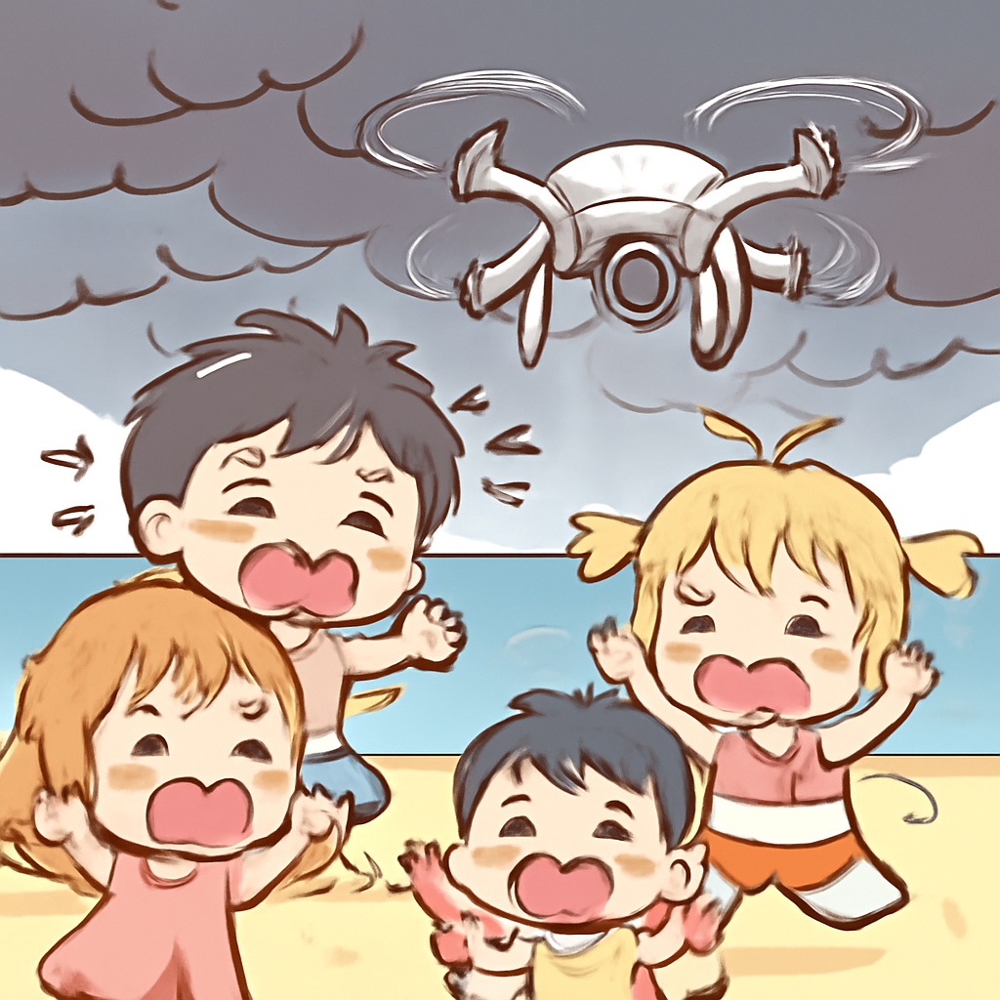
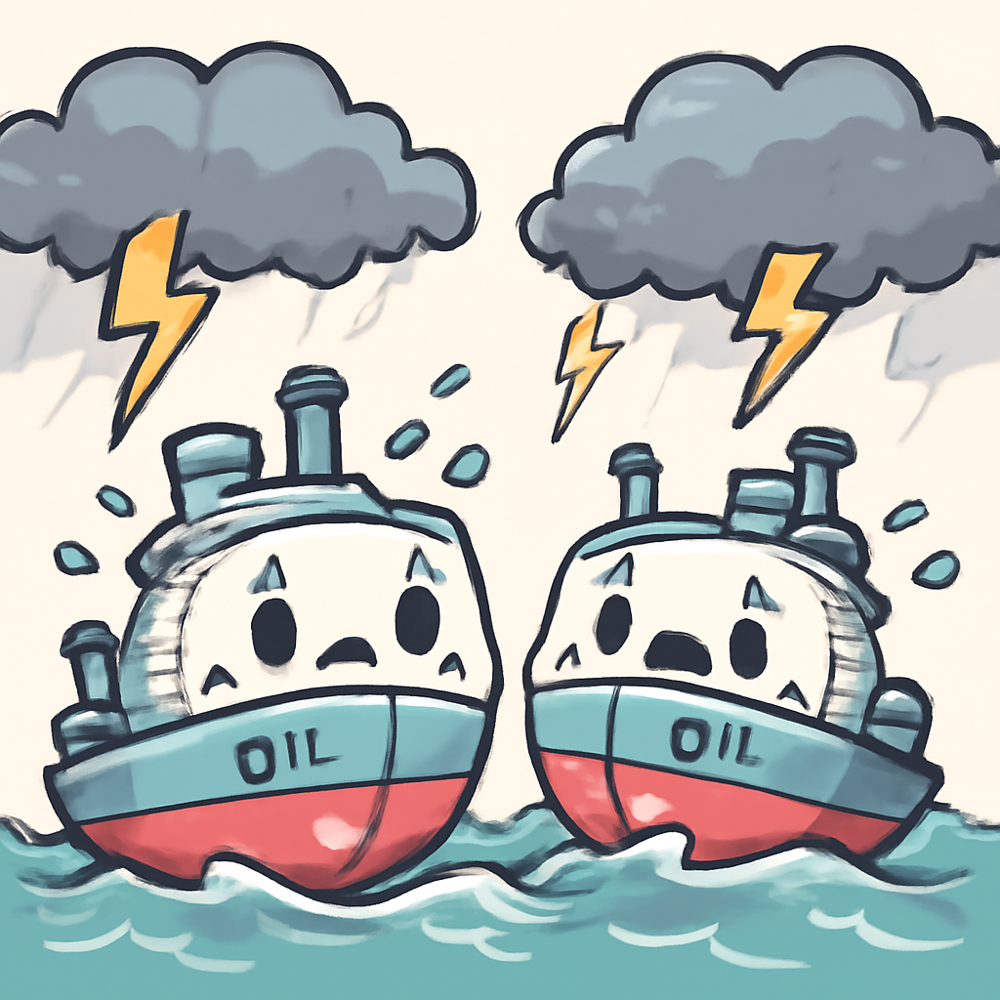
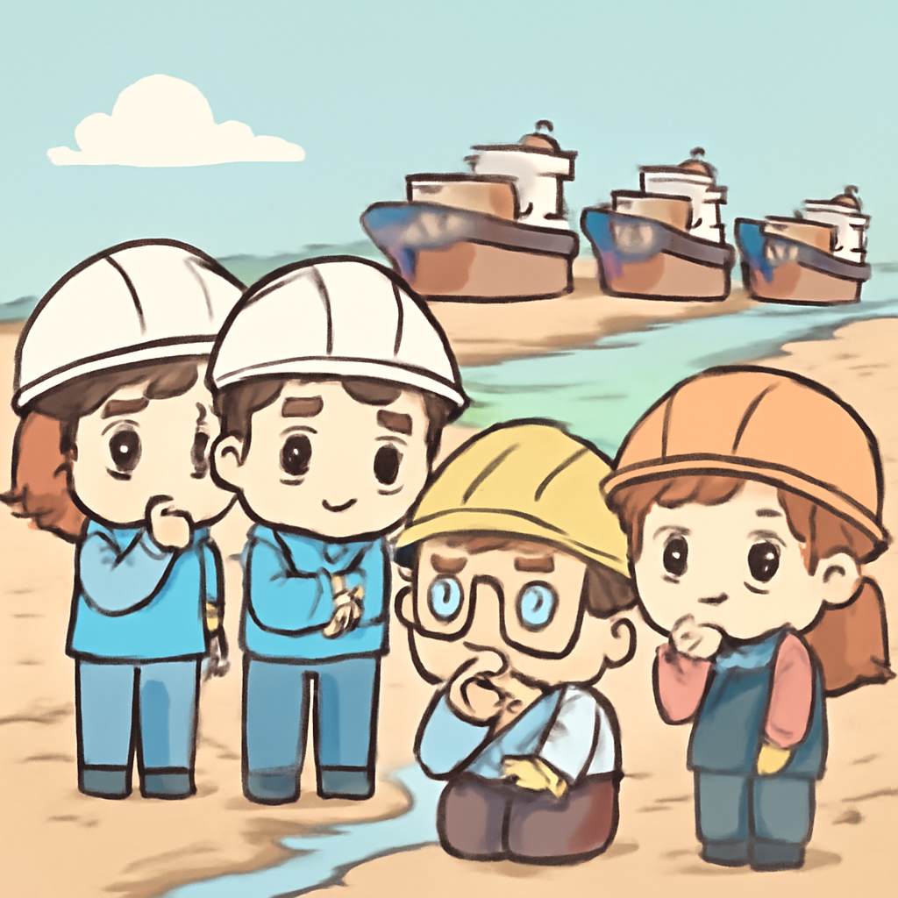

其一 · 烏克蘭黑海 · 無人機襲擊海灘致死
烏克蘭無人機在黑海海灘襲擊，造成多人死傷。

在烏克蘭的黑海海灘上，近日發生了一起悲劇性的無人機襲擊，造成七人喪生，四十人受傷，其中包括三名兒童。這一事件再次突顯了在衝突中無辜民眾的脆弱，並引發了國際社會的強烈譴責。真希望這場無休止的戰爭能早日結束，讓人們可以安心在海灘上享受陽光，而不是恐懼無人機的到來。
🔗 原始新聞 ↗
2026-08-04 · 以古觀今，以笑抗愁
烏克蘭無人機在黑海海灘襲擊，造成多人死傷。

在烏克蘭的黑海海灘上，近日發生了一起悲劇性的無人機襲擊，造成七人喪生，四十人受傷，其中包括三名兒童。這一事件再次突顯了在衝突中無辜民眾的脆弱，並引發了國際社會的強烈譴責。真希望這場無休止的戰爭能早日結束，讓人們可以安心在海灘上享受陽光，而不是恐懼無人機的到來。
🔗 原始新聞 ↗
中東地區油輪面臨歷來最嚴重的威脅。

根據分析師的報告，隨著最近對替代航運路線的攻擊，中東的油輪面臨的威脅達到歷史新高。這不僅影響到全球能源供應鏈，還可能引發更大規模的地緣政治衝突。看來，海上的風浪不只是天氣問題，還有政治的漩渦在裡面翻騰。
🔗 原始新聞 ↗
歐洲多條河流因乾旱水位驟降，運輸受限。

目前，歐洲的莱茵河和多條主要河流因乾旱而水位創下新低，這影響了貨物運輸和電力生產。這場乾旱對經濟造成了不小的打擊，各行各業都在思考如何應對這種變化。看來，水位低並不只是河流的問題，還是整個經濟的警鐘。
🔗 原始新聞 ↗
西捷航空與空服員達成協議，結束罷工。
加拿大西捷航空的空服員們在經過一天的罷工後，最終達成了一項初步協議，結束了這場讓無數旅客措手不及的罷工。這場罷工導致了數百班航班的取消，讓人不得不懷疑：坐飛機的時候，是不是應該多帶點零食，以備不時之需？
🔗 原始新聞 ↗
蘇姬在緬甸獲得外界罕見接觸，健康狀況良好。
緬甸的軍事政府近日釋出蘇姬與紅十字會官員會面的照片，這是她自被拘留以來首次與外界接觸。這讓不少人感到欣慰，至少她看起來健康，而她的情況也引起了國際社會的關注。希望未來能有更多這樣的聯繫，讓她的聲音能再次被聽見。
🔗 原始新聞 ↗